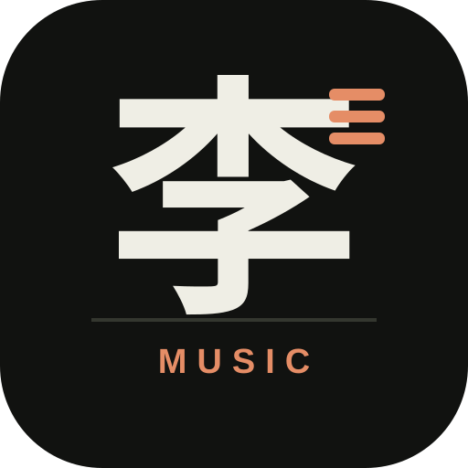

李志
/
听
连接曲库中
ONLY MUSIC / NO RULES
想听
就听。
音乐不分设备。你想什么时候听，就什么时候听。
曲库记录
—
LIBRARY / LI ZHI
全部歌曲
专辑
现场
我喜欢
×
专辑档案
—
所有作品
载入中
NO.
SONG
ALBUM / LIVE
正在连接音乐档案
读取原项目的在线歌单……
继续显示歌曲

选一首歌，开始。
LI ZHI / PLAYER
0:00
0:00
← 返回
封面
歌词
李志
正在查找歌词…
重新匹配
导入 LRC
粘贴歌词
保存
取消
还没有播放音乐
李志
♡
0:00
0:00
我们不能失去信仰。
复制歌曲链接